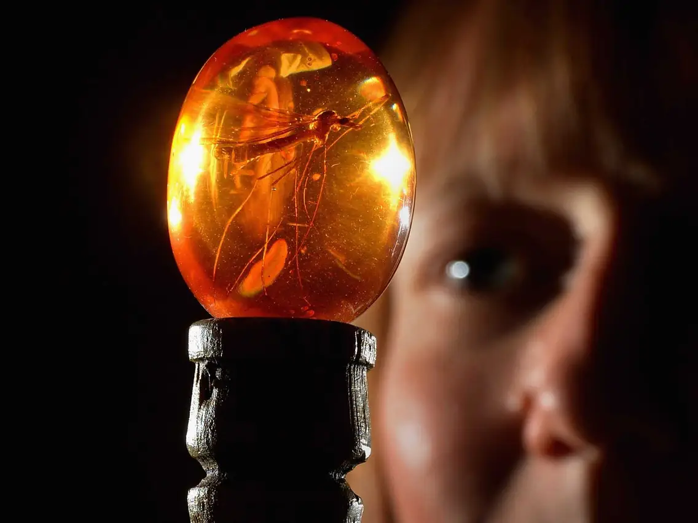
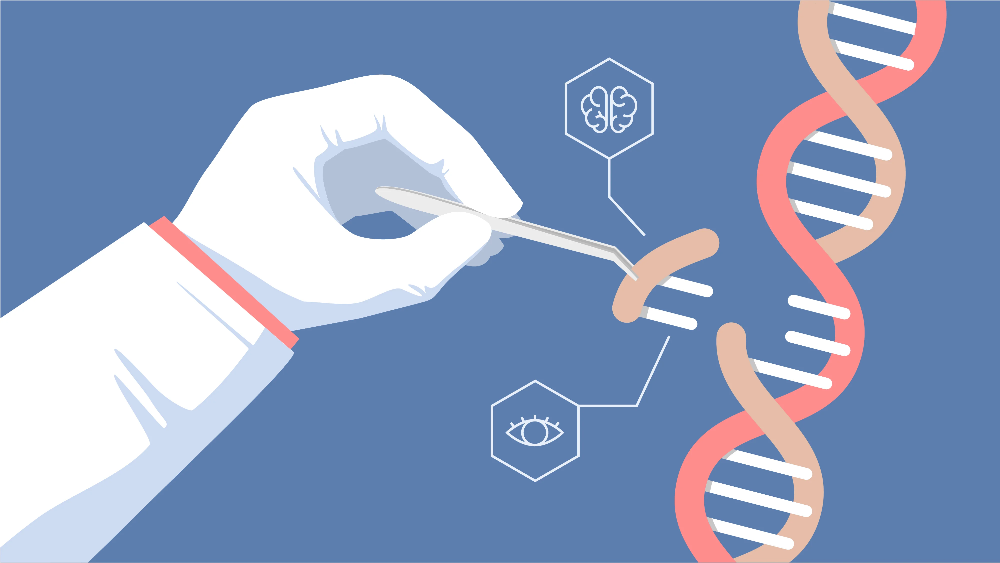
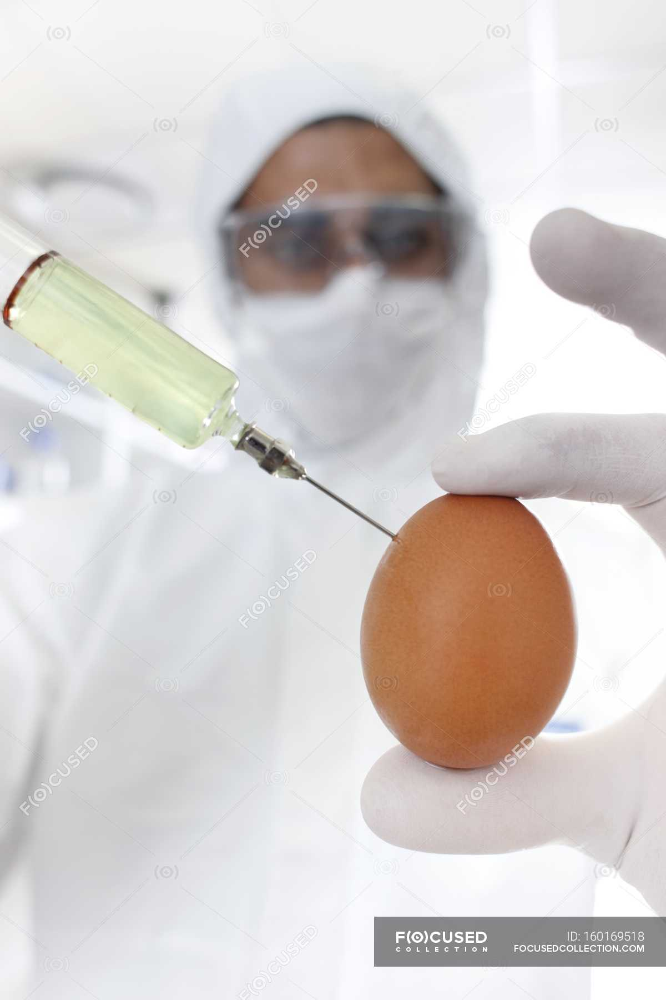
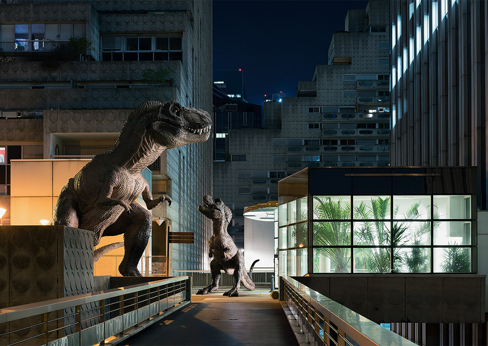

Our Plan:
With the help of experts on gene engineering and dinosaurs, we devised a short 4 step plan to revive and populate the world with dinosaurs:
| Step 1: | First, we will retrieve a well preserved dinosaur fossil or a mosquoito trapped in amber containing a suffecient amount of well preserved dinosaur blood. |  |
| Step 2: | Then, using the most advanced editing equipment, we'll carefully extract bit's an pieces of a dinosaurs DNA and meticulously repair the dinosaur's genome. |  |
| Step 3: | Next, we'll take our reconstructed dinosaur DNA and insert it into an egg, allowing it to incubate and grow. |  |
| Step 4: | Lastly, we'll hatch, raise, and breed our dinosaurs. Hopefully, over time we'll be able to re-introduce dinosaurs to nature and set up a stable ecosystem. |  |